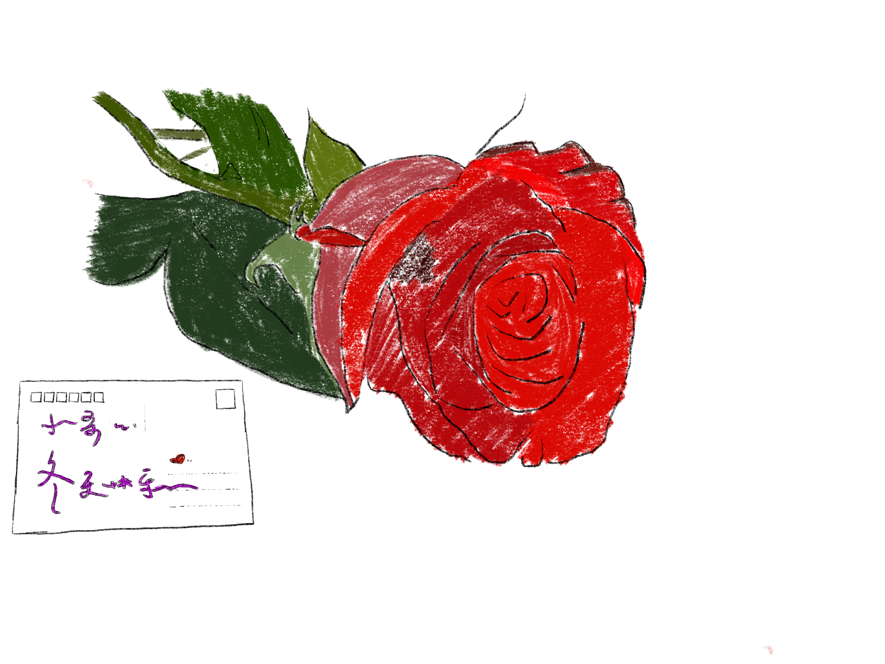

简介：每天更新点小东东，顺便每天学点html来玩玩，最重要的还是tensorflow啦嘻嘻嘻
不知道小小宝贝多久会来看看呢？哈哈哈哈
（2020.11.12）打算新增一些板块，小宝说看网站有那种了解我的生活的感觉，预计新增一个随记小版块
点我进随记（tesing）宝，我来了。因为共情力（？）我的情绪有点低沉。今天你去拍视频了，和4，5个男生。其实无论如何，我都是会有点点担心的。但是此时此刻，我的担心早已被无奈所淹没。我不经意提了一句让你同组的人帮你带卫生巾，才得知你今天只有一个女生就是你。我多么希望的是，你能够主动地告诉我，“猪猪，明天我得和4，5个男生去拍视频哦，只有我一个女生”。我不是小孩子气的人，我有我的成熟度，这些情绪自然是我自己来处理的，就如同孟非所说，“女生的安全感不能够都是要求男生来给你提供，要自己给自己安全感”。我现在做的就是自己给自己安全感，而这也应该是我做的，没有问题。但是我多么希望的是你主动告诉我这个消息，被动地知晓这个消息，会加深我的难过（如果你说，我忘记了。那我也没有办法说什么，我甚至连支撑我继续不开心都做不到，只能“好啦好啦猪猪爱你”，实际上在这句话以后花了更多的时间去自己消化）。当我没有共情力的时候，我被认定为是一个木头（我自己认定的哦），当我拥有共情力的时候，我不想被你认定为，“麻烦，啰啰嗦嗦，小孩子气，幼稚”。很多时候，我想你。想去找你聊天，但是怕被你认为是麻烦和幼稚，现在就是如此，我只能将想，付诸于这上面的文字，我知道，手机会隔很久很久才会亮起来，我也多么希望收到你所答应的一大堆表情包说“猪猪我们还在忙哦，有空找你”。如果收到了，我就会超级开心，如果没有，我可能会比较低落然后晚上的时候和我说，你可能就是卖点萌逗我开心，然后我就开心咯。但是在这个过程中，我还是经历了很多难过的时间。以前，在文学作品上看到那种，。写到这里，我想写写一路走来教室我的感受吧，爱情会碰到很多的困难和阻隔，尤其是异地恋。现在，关于忙绿这个事情就变得尤其重要。随着我们进入大二大三大四，我们会越来愈忙，没有大块大块的时间去聊天，这个是确定无疑的，那么如何处理我们忙碌时候就变得尤为重要了。不知道你有没有过苦苦等待消息的经历，每一次，你去忙了，无论是什么事情，我都会把手机放在我的右手边，因为我在等待你的消息。“我想你，但是不能告诉你”，因为你有自己事情，一个成熟的做法就是尽量不去打扰你，你也是希望这样子的，但是这些背后都是，多么希望主动发一点消息过来。（后面说的话都是我的一己之见，提出一些我最希望得到的）9：24分，小宝贝发了“猪猪我们开始拍咯，有空找你”。我超级开心，那我上面写的东西要不要删除了，不要！嘻嘻嘻。上面这一段，基本上就是每一次小宝贝因为忙碌不回复我或者不主动找我的时候，我的心里过程，同时就开始期待下一次说“猪猪我们在休息，聊天一下喝点水巴拉巴拉”。当然也有可能是“猪猪我们拍完了，去吃饭饭（哦豁！！和4，5个男生一起吃饭）”（当然是我不希望看到的）大概过程是这样子。对我而言，小宝，我不是小孩子哦，我只是一个需要人陪的大男孩，表面上嘻嘻哈哈，乐天派，但是实际上内心是孤独的，（详见猪猪的随记11.13）。我知道小宝贝在不忙碌的时候，都是找猪猪玩的，我也超级开心哒，但是就是想说在，你忙碌的时候主动发点小消息，分享当前的事情，比如昨天，你拍了景色呀，奶茶呀，和我说了各种事情啦。
阿宝阿宝！今天终于收到了你寄来的信啦！！！开心开心，看完你的信以后嘞，超级开心哒！因为之前你提到过那个，你说异地恋之类的你会觉得我们之间有隔阂，很久不见，你会觉得不熟悉之类的，我就很担心。因为我并没有这种感觉，所以我就一直想办法去不让你产生这种想法，比如我一直以来都是秒回你啦，也许这样子你会感觉到安全感儿嘻嘻嘻。然后现在帮小宝贝剪了视频，你说感觉到我们两个人用心去完成某件作品就觉得很开心。我也是！！当然这期间我们也经历了例如我可能因为你提出的好多修改意见而感觉到不开心烦躁之类的啦！嘻嘻嘻。不过也感谢猪猪，我们都在这一段时光里收获了很多东西。希望我们未来一起加油哟！
等我更新哟，待我解决MFE小（大）问题哈哈哈哈哈
❤️乖乖等我更新！不会太久爱你猪猪
阿宝阿宝！学习累了吧！快点来网站看看哦！猪猪画了一下我们的校园，这是早上的时候，来教室的路上看到的，阳光打下来的感觉是真的很舒服，又好看，又舒服，秋天加上金色的树叶，还真是好好看的呢！明天猪猪要体检咯，8:30到9点30，我可能会去早一点，早去早结束，我就可以去学习啦！嘻嘻嘻，小宝贝，每一天都要加油哟！爱你亲爱的！

爱你小宝贝，等我更新哒，可以先看看随记板块（tesing）如果你喜欢的话，我就正式弄嘻嘻嘻
今天收到小宝贝的袜子咯，嘻嘻嘻开心开心开心开心。这种日常用到的小东西，又贴心又开心爱小宝贝！！！。袜子还是很不错哒又好看又保暖，还去小红书看袜子哦小宝贝，很用心呢嘻嘻嘻。谢谢小宝贝啦！因为昨天小宝没有收到花花，本猪猪，今日特地，画了一个小花花送给小宝！别人有的我的小宝贝也要有！！嘻嘻嘻。另外，现在在秋冬交替季节猪猪妞要注意保暖哦，不能因为猪猪的马丁靴好看就不穿光腿神器也要去穿的呢，猪猪发现了要没收小宝的鞋鞋哦！然后下次去武汉就只能光脚喝奶茶啦！！
爱你小宝贝！今天终于有时间来写这个东西啦！（好久没有画画咯，主要是时间比较忙啦！善于发现美的眼睛👀困困哒哈哈哈哈）。我想记录一下昨天晚上的事情。（经过是，小宝贝看到武大外联推送的文章有一个可以免费送鲜花的活动，但是我没有发现，然后猪猪舍友收到了两个人送的鲜花，猪猪感觉不开心咯，然后我就开始激动啦，巴拉巴拉之类的）。其实在睡觉之前，我就知道我今天肯定会记录这个事情，因为我觉得这对我来说的确是一个很重要的，思想拓展吧。我发现，其实人还是偏执和自私的。因为，在正常的情况下，我都会没有任何考虑地就会去想到小宝贝，发现有什么给小宝惊喜呀，开心之类的。但是，一旦碰到了，我也有点情绪（不开心，累，委屈之类的）的时候，人就很容易产生一种“亏”的感觉。从昨晚我的“激动表现”可以看得出来，只有我不断地说什么，我对你多好多好呀之类的。这是第一个我反省的东西。人的确很难在自己被情绪所困扰的时候，还能理性地去对待其他人，包括自己爱的人。（咩宝，不好意思哟，猪猪爱你）。然后第二个事情，可能是因为我的死板或者说一根筋，我觉得我就是想做一个好儿子，好舍友，好男朋友，所以我会要求自己尽可能多地去为别人着想，或者说，我想成为一个“完美”的人，所谓的“拥有强者心态的人”（这是我自己的定义，就是我拥有与强者交流切磋的能力，但是我不会给弱者带来压力的那种）。简单滴说就是，我希望做得最好。对待小宝贝也是一样咯，我想成为一个大家都羡慕哒男朋友哈哈哈哈哈（之前我还给自己定了一个目标呢😂说出来不拍你笑话，我评价自己是不是个好男朋友，就看你舍友怎么评价我的哈哈哈哈（更简单地说是。你舍友羡慕你有这样一个男朋友））哈哈哈哈哈哈，（害羞，我好像挺傻的）哈哈哈哈。哎呀！就是像成为你的唯一嘛（害羞😳）。当然啦，我也想成为那个你欣赏的人咯，虽然还不是嘞，但是还要继续加油芜湖。（跑题啦）哈哈哈哈，其实就是，因为我的这方面的“完美主义”，想呈现一个“完美”男友，所以你发现没有每一次你生气，我都会很激动，因为我感觉自己还是“做得挺好哒”（害羞，小宝贝别打我），然后我发现你因为我不开心啦之类的，我就觉得，啊，我又没有做到，巴拉巴拉的，然后就开始激动啦，巴拉巴拉一大堆。这就是我昨天晚上以后，我想要说的或者说记录的，我虽然写得“形散神也散”，但是，最主要的是，我对我自己的那种认知，有一个新的概念存在里面了，以后我再碰到这类事情的时候，我就知道“有迹可循”咯！小宝，好爱你的呢！昨天最后的时候，你委屈地说，“我也想要嘛，那怎么办，我也不开心，但是又不能骂你“， 我就感觉既开心，又自责，又让小宝贝不开心咯！最后，引用一下扎西朗朗的话，”语言和文字真的是不可执取的东西，当一句话说出来的或者写下来，他就不是你的了，你必须允许别人任意解读，甚至误读。所以我最想说的话，其实在我开口的那一刹那就已经说完“。每一天，每一次更新，我都将我最想说的话，脱口而出。
爱你小宝贝！记录一个有趣的小事情。今天晚上，小宝让我帮她在电脑上登录QQ去发作业给老师。然后，小宝是不想告诉别人她的密码的，所以表达了她的担心，然后我就给她说“那你先改密码，然后登录完了以后，你再改回去呀”。本来是随口一说开玩笑的。没想到小宝真的去改啦。哈哈哈哈哈。小学和初中的时候，关于恋爱，我的认知最多的就是，“男女朋友互相知道各自的QQ密码哦”哈哈哈哈，所以今天第一次碰到这种触及情侣之间关于密码的，然后小宝贝的确让我吃了一惊。哈哈哈哈哈，挺有趣的其实。在我看到小宝贝去改了密码以后，我就有点点不开心啦。不过，最后小宝贝还是太可爱啦！！！！！还要给我唱歌安慰我嘻嘻嘻，真是小天使呢！心都化啦！爱你小宝。世界很奇妙，有幸抓到了一个可爱的小宝贝一起共同探索，嘻嘻嘻！爱你
今天说说绿皮火车吧。小宝在很小的时候，就开始坐绿皮火车啦！相信你有很多的儿时记忆也和绿皮火车有关。我在很小很小的时候
我就记得我也做过绿皮火车去我外婆家，我还记得在绿皮火车上买了一个可以扭来扭去的玩具（蛇）。那个时候还很好玩的感觉。一直到了高考结束，我才重新买上了去重庆的火车票
然后给小宝贝制造遂宁小惊喜哈哈哈哈哈。自此我就真的爱上了绿皮火车。不知道为什么我会这么喜欢绿皮火车。排除比较便宜以外，可能是享受在火车上慢慢溜达过去的慢节奏还有形
形色色的人吧。绿皮火车，不仅承载着底层人民的吃饭的希望， 也是每一对异地恋情侣的向往和爱。哈哈哈哈，可能就是因为绿皮火车里面的满满人情味，才让人如此着迷吧。每一次准备
坐绿皮火车之前，我都会很兴奋，除了坐火车的开心，还有可以去见小宝贝的激动。尤其是这种一点一滴“矿机”过去的，就像一点一点努力，我就离你越来越近。这种感觉真的令人很舒服
和放心，他能见证我为小宝贝作出的每一次努力，火车就是我们的见证者嘻嘻嘻。我知道我在努力，就可以和我的小宝贝在一起，我就会每天都充满积极，开开心心。这可能就是异地恋的
魅力吧。虽然没有，近在咫尺的依靠，但是有永远为你前行的决心。每一次相遇都是不容易的，也是因为这个不容易，让我们更加去珍惜。这种难得，就像在这个快节奏的社会，能够在绿皮
火车上享受慢节奏的舒畅，是一样的！小宝贝，事情的结果取决于你的看法和心态，我爱你，无所谓你在哪里，因为你在哪里，我就会去哪里。有你，有爱，就有🐷耶耶耶（矫情了一下哈哈哈）

爱你小宝贝。终终终终终终终终终终于抢到欢乐谷的票啦！芜湖！第一天我抢到了你没抢到，第二天我帮你抢但是没抢到，第三天我睡觉忘记啦又没抢到，第四天终于被我抢到啦！
芜湖！其实我还是第一次参与抢票的环节哈哈哈，原来在10月31在上海举行的LOL全球总决赛的门票我也去“抢”啦，其实不是抢，他是登记然后抽签，公布的时候我发现我是候补的，
然后过了一下说，不好意思，”你没有获得观赛资格“哈哈哈哈，运气不是很好。不过，该抢到的都抢到啦！还是不错哒，等着去和小宝贝在欢乐谷happy芜湖

爱你小宝贝！要好好学习哦
爱你小宝贝！小宝小宝，我已经到宿舍啦！今天给了我一个大惊喜哦！嘻嘻嘻开心开心。考完试除了开心以外，还想马上拿起手机去看看我的小妞妞在干什么
有没有想我之类滴！没想到一出来就给了我一个大惊喜哈哈哈哈哈！爱你小宝贝。你准备惊喜的时候肯定也很开心哈哈哈哈，因为想看到对方收到你惊喜的时候开心的样子
嘻嘻嘻而且还去安排咯，花时间去找哪个排名高了，哪个好喝啦，还安排好时机，让我一出来就能喝到嘻嘻嘻。太开心啦！小宝，恋爱中这种很细小的细节，真的能够让我们都很感动
哈哈哈小笨蛋都说咯要给请你喝奶茶，你倒请我啦嘻嘻嘻，还让舍友蹭了一杯，不想给他嘻嘻嘻。下次我也要请你们宿舍喝奶茶哦，你什么时候想喝我就出动嘻嘻嘻！今天是个开心开心
开心开心开心的日子嘻嘻嘻

爱你小宝贝。昨天恭喜你呀，获得咯第一，去年以0.01分（？）遗憾输给了法学院，今年好像超过第二名好多好多分呢！小宝贝棒棒哒！昨天，也是LOL全球总决赛的日子，我们中国赛区LPL的SN遗憾1:3败给了韩国赛区LCK的DWG， sn的5个小伙子真的打得很好，虽然留下了遗憾，但是战过，就值啦！我们的人生也是一样的，并不是每个人都会成功，因为只有成功者才会被人记住，但是失败者呢？假设有一天，我们也成为了失败者，也要能做到，败不馁。成功也能做到，胜不骄。方可成就强者心态。芜湖！共勉之小可爱

爱你小宝贝。今天晚上要去跳舞啦💃啦！辛苦了那么久终于可以展示咯，恭喜你呀！我感觉你成长了好多呢，大一的时候，你碰到那种作业和跳舞之间的冲突，你会感觉到烦躁，偶尔会变得比较低沉，但是现在给我感觉你越来越坚强啦！每天都是朝气蓬勃，还要被猪猪气哈哈哈哈哈，但是你还是快快乐乐滴！加油小宝贝，我们一起越变越好哦
爱你小宝贝。昨天你想买鞋鞋，原来我答应帮你买马丁靴滴，但是到了月末再加上我买了去看你的车票，就的确没有什么钱啦😊看你没能买到
有一点不开心的样子，希望你能理解猪猪哦💝
 Issues
Issues